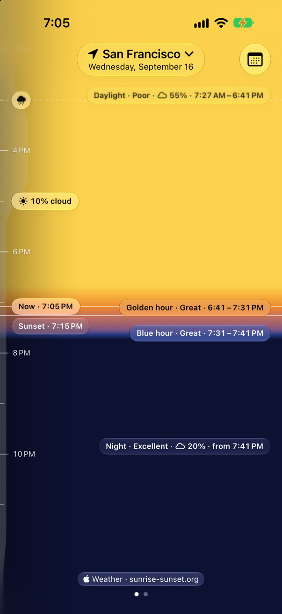
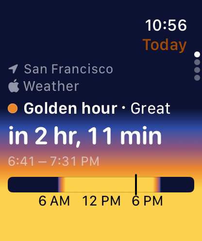
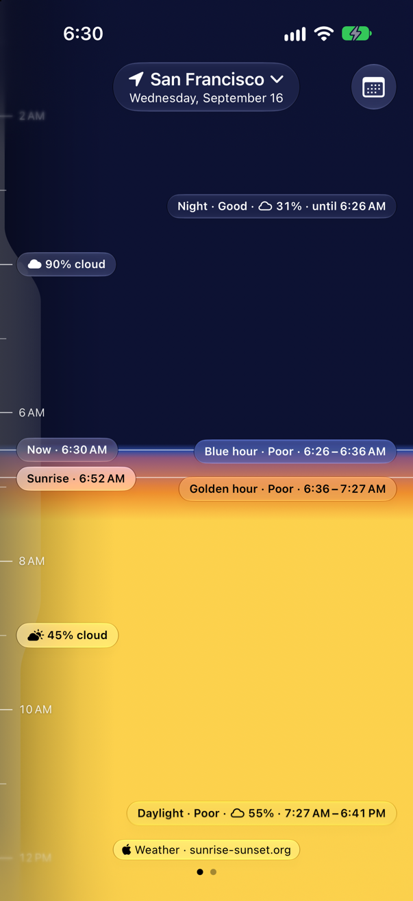
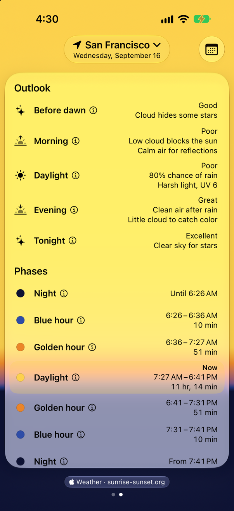
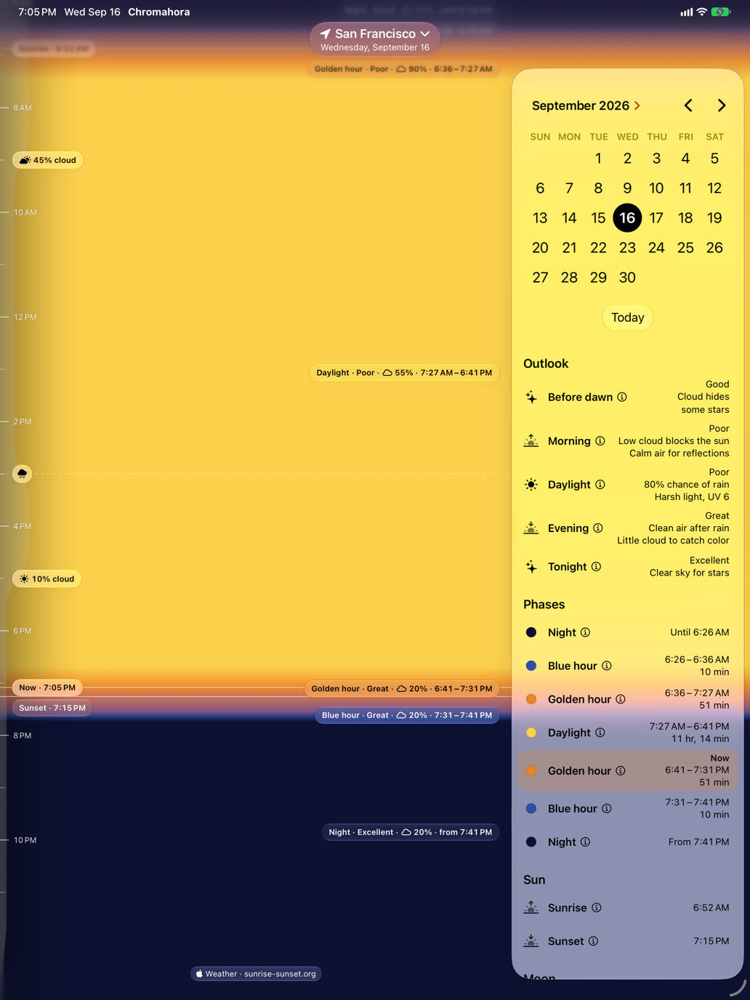
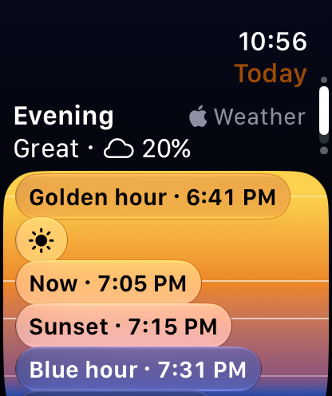
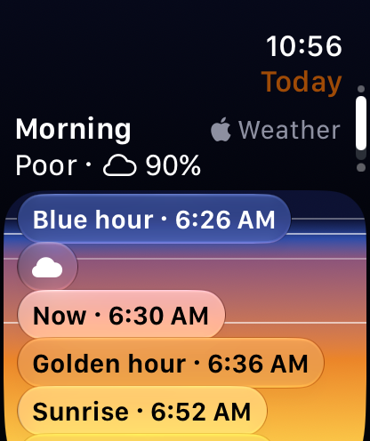
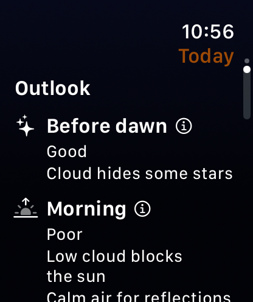

Chromahora
A day planner for photographers: blue hour, golden hour, weather, cloud cover, UV, moon phase and dark skies, with an outlook that rates each stretch of the day's light.


A day planner for photographers: blue hour, golden hour, weather, cloud cover, UV, moon phase and dark skies, with an outlook that rates each stretch of the day's light.


Timeline
Scroll through the day as it will look. Night, blue hour, golden hour and daylight each color the timeline where they fall, marked with sunrise, sunset, cloud cover and the weather.

Outlook
The outlook rates each stretch of the day, from before dawn to tonight, and says why: low cloud blocking the sun, clean air after rain, or a clear sky for stars.

iPad
On iPad and an unfolded iPhone Duo, the calendar and the day's details sit beside the timeline. Pick any day, or search for anywhere you're headed, and its times show on its own clock.

Widgets
Home Screen widgets show the next golden or blue hour, the next sunrise or sunset, the moon and tonight's dark sky, or the whole day's light.
Apple Watch
Turn the Digital Crown through the day's cards: a countdown to the next golden or blue hour, the morning's and evening's skies, and the day's details. Complications show when the next one starts, and how promising it looks.


